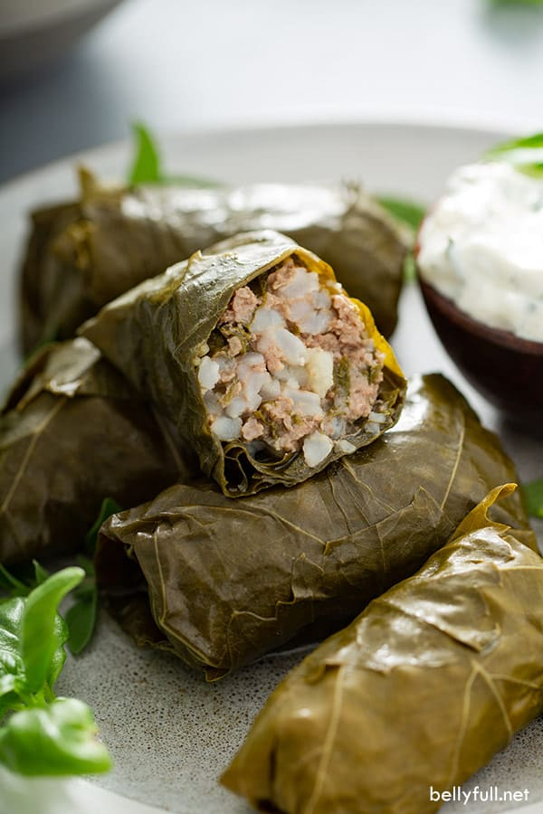

ورق عنب

الشرح
الورق عنب، المعروف أيضًا بـ "دولما" أو "دولمادس"، هو طبق شهير في مختلف المطابخ، خاصة في المناطق البحر الأبيض المتوسط والشرق الأوسط والبلقان. يتكون هذا الطبق عادة من أوراق العنب المحشوة بخليط لذيذ من الأرز والأعشاب وأحيانًا اللحم أو الخضروات. فيما يلي وصف للورق عنب:
المظهر: أوراق العنب المستخدمة في هذا الطبق عادة ما تكون لونها أخضر داكن وتأتي بأحجام مختلفة. عادة ما تكون مرنة ولها قوام لامع بعض الشيء.
مكونات
- ماء (لنقع أوراق العنب أو غليها لتنعيمها)
- أوراق عنب (طازجة أو محفوظة في محلول ملحي / خل)
- أرز (أرز قصير الحبة أو متوسط الحبة، مثل أرز أربوريو أو كالروس)
- لحم مفروم (لحم بقر أو لحم ضأن، أو مزيج منهما) - اختياري للنسخة النباتية
- بصل، مفروم بشكل ناعم
- أعشاب طازجة (بقدونس، شبت، نعناع، أو مزيج منها)
- زيت زيتون
- ملح وفلفل حسب الذوق
- بهارات (مثل البهار الأسود، القرفة، أو الكمون) - اختياري وتختلف حسب التفضيلات الإقليمية
- ماء أو مرقة نباتية / لحم / دجاج
- عصير ليمون (للحصول على نكهة حمضية)
- أعشاب طازجة (بقدونس، شبت، أو نعناع)
خطوات
- تجهيز أوراق العنب:
- إذا كانت أوراق العنب طازجة، قم بنقعها في الماء الساخن لمدة قصيرة لتنعيمها وإزالة المرارة. ثم صفيها واتركها تبرد.
- إذا كانت أوراق العنب محفوظة في محلول ملحي أو خل، اشطفها بالماء لإزالة الزيت والملح الزائد. قد تحتاج إلى نقعها في الماء الساخن لتنعيمها.
- تحضير الحشو:
- في وعاء كبير، قم بمزج الأرز مع اللحم المفروم (إذا كانت النسخة تحتوي على لحم) والبصل المفروم والأعشاب الطازج
- أضف الزيت الزيتون والتوابل (إذا رغبت) وقلب المكونات حتى تمتزج بشكل جيد.
- لف أوراق العنب:
- ضع كمية صغيرة من خليط الحشو في وسط كل ورقة عنب.
- قم بلف الورقة حول الحشو بإحكام لتشكيل كرات صغيرة. لا تجعل اللفائف ضيقة جداً للسماح للأرز بالتمدد أثناء الطهي.
- الترتيب في وعاء الطهي:
- في وعاء أو قدر طهي كبير، قم بترتيب أوراق العنب الملفوفة بحذر، وضعها جنبًا إلى جنب.
- احتفظ بفراغ بين الدولما للسماح بالطهي وامتصاص السائل.
- إعداد السائل للطهي:
- أضف الماء أو مرق الدجاج أو اللحم إلى الوعاء حتى يغطي أوراق العنب تمامًا.
- أضف عصير الليمون وبعض الزيت الزيتون للإضافة إلى النكهة.
- الطهي
- قم بتسخين الوعاء على نار متوسطة حتى تغلي السوائل.
- ثم اخفض الحرارة إلى مستوى منخفض وغط الوعاء بغطاء.
- يطهى ورق العنب لمدة 45-60 دقيقة (أو أكثر في بعض الأحيان) حتى ينضج الأرز تمامًا وتصبح أوراق العنب طرية ولينة.
- التقديم
- بعد طهي ورق العنب، قم بترتيبها بشكل جميل على صحن التقديم.
- يُمكن تزيينها بشرائح الليمون وبعض الأعشاب الطازجة قبل التقديم.